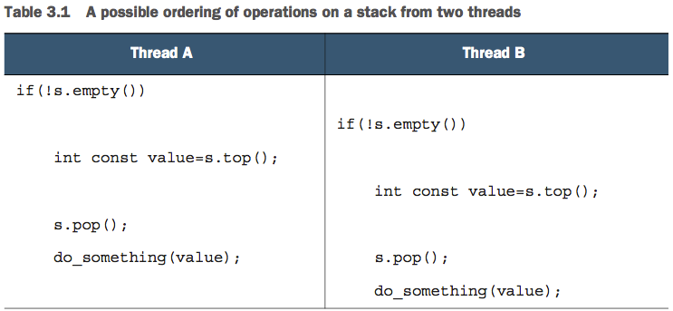
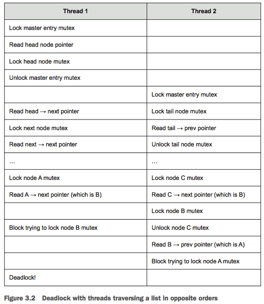

AsynchronousProgramming
Table of Contents
- C++ Concurrency In Action
- 01 hello world of concurrency in c++
- 02 managing threads
- 03 sharing data between threads
- Problems with sharing data between threads
- Protecting data with mutexes
- Using mutexes in C++
- Structuring code for protecting shared data
- Spotting race conditions inherent in interfaces
- Deadlock: the problem and a solution
- Further guidelines for avoiding deadlock
- Flexible locking with std::unique_lock
- Transferring mutex ownership between scopes
- Locking at an appropriate granularity
- Alternative facilities for protecting shared data
- 04 synchronizing concurrent operations on atomic types
- 05 designing lock-based concurrent data structures
- 06 designing lock-free concurrent data structures
- 07 designing concurrent code
- 08 advanced thread management
- 09 parallel algorithms
- 10 testing and debugging multithreaded applications
- c++ 多线程编程
- 参考资料
C++ Concurrency In Action
01 hello world of concurrency in c++
What is Concurrency?
将应用程序设计为多进程来实现并发
通信方式：进程之间通过常见的内部进程间通信（例如 信号、socket、files、pipes 等等）来互相交流信息
缺点：
- 进程之间的通信比较复杂或者比较慢，或者又复杂又慢，因为操作系统通常提供了很多保护为了避免一个进程意外修改另一个进程的数据。
- 运行多个进程有天然的消耗，操作系统必须拿一部分内部资源用于管理进程。
优点：
- 操作系统为进程间提供的保护和高阶通信机制，有利于编写安全的同步代码。Erlang 编程语言就是基于进程实现并行的。
- 使用分开的进程来实现并发时，可以将分开的进程在不同的机器上运行，这些机器通过网络链接在一起。
将应用程序设计为多线程来实现并发
通信方式：一个进程内的所有线程共享相同的地址空间，大多数数据可以被多线程直接访问（全局变量依然是全局的，对象或数据的指针或引用可以在线程之间进行传递）
缺点：
- 当数据被多个线程访问时，应用程序开发者需要确保每个线程在任意时刻访问该数据时看到的值是一致的。
- 多线程共享数据可能会引起很多问题，为了避免这些问题，要使用一些工具，还要遵守一些指导原则。
优点：
- 共享地址空间加上线程之间没有数据保护，使得多线程比多进程的开销要小很多，操作系统不需要过多的记录。
- C++标准没有为多进程的通信提供任何内置支持，使用多进程需要开发人员依赖平台相关的特定 API。
并发(concurrency) VS 并行(parallelism)
这两个术语都是指，利用可用的硬件同时执行多个任务。但是并行更多是面向性能的，当人们谈到并行时，他们主要关心的是利用可用硬件的优势来提升大量数据处理的性能。当人们谈到并发时，他们主要关心的是任务的分割(关注点分离 Separation of concerns)。
Why use Concurrency?
使用 concurrency 主要有两个原因：分离关注点（Separation of concerns）和性能。
使用 concurrency 来分离关注点 使用 concurrency 来提高性能
可以利用 concurrency 通过两种方式来提高性能：
第一种方式：将一个整体划分为多个部分。听上去很简单，但是划分可能很复杂，因为各个部分可能会有依赖。划分既可以是对处理流程的划分（任务并行），也可以是对数据的划分（数据并行）。
第二种方式：利用可行的并行解决更大的问题。一次处理不止一个文件，而是处理两个或 10 个或 20 个。尽管这是数据并行的一种应用，但是侧重不同。其使用相同的时间处理一大批数据。
什么时候不要使用 concurrency?
当使用 concurrency 得到的收益比不上付出的代价，就不应该使用 concurrency。
启动一个线程有天生的开销。OS 需要申请对应的内核资源，栈空间，还需要将线程加到 scheduler，这些都需要消耗时间。如果线程上的任务很快就结束了，可能任务消耗的时间还没启动线程消耗的时间多，这可能使得性能更差。
线程是有限的资源。如果你同时运行很多线程，这消耗了 OS 资源，可能使系统整体会变慢。不仅如此，使用太多线程可以耗尽一个进程的可用内存或地址空间，因为每个线程都需要一个独立的栈空间。对于 平坦架构的 32 位进程，地址空间的大小限制为 4GB，如果每个线程的栈占用 1MB，则最多可以有 4096 个线程。尽管可以使用线程池来限制线程的数量，但是并不能解决所有的问题，线程池有其自身的问题。
在 client/server 应用程序中，为每个连接启动一个线程，这对于少量连接来说是可行的，对于需要处理很多连接的高需求服务，这会很快耗尽系统的资源。这种情况下，可以使用线程池来优化性能。
线程越多，操作系统要做的上下文切换就越多。添加额外的线程将会减低应用程序整体的性能。因此，为了达到系统最佳性能，需要依据硬件的并行能力来调整线程数量。
Concurrency and multithreading in C++
History of multithreading in C++
1998 C++ 标准没有包含多线程，当时内存模型也没有正式定义，没有编译器扩展是无法编写多线程应用的。
很多编译器提供商利用当时很流行的平台相关的 C 多线程 API(POSIX C 标准和 Windows API)来支持 C++多线程。编译器的支持只是允许调用对应平台的 C API，以及保证 C++ 运行时库在多线程存在的情况下也可以正确执行。尽管很少有编译器商家提供正式的可感知多线程的内存模型，但是编译器和进程的行为已经足够好，因此编写了大量多线程 C++程序。
不满足于使用平台特定的 C API 来处理多线程，C++程序员指望他们的类库来提供面向对象的多线程设施。MFC、Boost、ACE 等等，都累积了一些列类，对底层平台相关的 API 进行了封装，为多线程提供更高级的设施，来简化多线程编程任务。尽管这些类库的具体细节差异很大，特别是启动新线程的处理，这些类的整体有很多共同点。他们都使用了 RAII 的习惯方法来管理 mutex。
大部分情况下支持多线程的 C++编译器和平台无关的类库是足够了的。但是缺乏 C++标准的支持,意味着由于缺少多线程感知的内存模型可能会在偶然的地方导致问题，特别是利用处理器硬件知识来获得更高性能的时候，以及编写跨平台代码而编译器在不同平台上行为不同时。
Concurrency support in the C++11 standard
C++11 不止提供了多线程感知内存模型。C++标准库还包含了管理线程的类，保护共享数据的类，在线程之间同步操作的类，以及低级的原子操作。
C++14 中新加了一种 mutex 类型用于保护共享的数据。
C++17 中添加了一整套并行算法。
Efficiency in the C++ Thread Library
高性能计算领域，开发者关心的其中一个问题是 C++的效率。如果你追求极致的性能，那么你需要知道，任何高阶工具都会有一定的消耗，这是抽象的代价。
C++ Standard Library 和 Thread Library 的设计目标之一是和直接使用低阶 API 相比，消耗相同或差距不大。另一个设计目标是提供低阶的工具用于实现极限性能。
Platform-specific facilities
C++ Thread Library 为多线程和并发提供了全面的工具，而总会有平台特定的一些工具，为了便于访问平台特定的工具 C++ Thread Library 提供了 native_handler() 成员函数，其允许底层实现直接操作平台相关的 API。
Getting started
#include <iostream> #include <thread> void hello() { std::cout<<"Hello Concurrent World\n"; } int main() { std::thread t(hello); t.join(); }
每个线程都有一个初始化函数，对于应用程序的初始线程(主线程)来说，这个函数就是 main 函数。其他线程的初始函数是通过 std::thread 对象构造时来指定的。
新的线程被启动后，主线程会继续执行。如果主线程不等待新线程结束，主线程会直接执行完成(可能在新线程获得执行机会之前)。通过调用 join() 来让主线程等待关联的新线程。
02 managing threads
Basic thread management
创建进程
class background_task { public: void operator()() const { do_something(); do_something_else(); } }; // thread 接受任意可调用对象，函数、重载了调用操作符的类、lambda等 background_task f; // f会被copy到属于新线程的存储空间，并被调用 std::thread my_thread(f); // Tips： // 下面的代码会被解析为声明一个名称为my_thread的函数 // 函数参数为函数指针 // 参数函数的参数为空 // 参数函数的返回值类型为background_task std::thread my_thread(background_task()); // 正确的方式如下 std::thread my_thread((background_task())); std::thread my_thread{background_task()}; // 使用 lambda 作为 thread 的执行函数 std::thread my_thread([]{ do_something(); do_something_else(); });
等待进程结束
线程启动后，需要显示地指定是否等待其结束（调用 thread 对象的 join 函数）还是让线程自己运行（调用 thread 对象的 detach 函数）。如果在线程对象销毁前不进行指定，std::thread 的析构函数会调用 std::terminate()，这会导致进程被终止。
case1
创建线程后，执行 detach，线程执行的函数永不结束，当主线程结束后，子线程也会被迫结束。
case2
创建线程后，主线程将局部变量的引用或指针传递给线程，执行 detach，主线程离开局部变量作用域，局部变量会被释放掉，之后线程引用的数据将是错误的。
id: 100504 print ival = 10 // 子线程启动后打印引用变量的值10 id: 89912 main-thread sleep 1 second // 主线程sleep 1s id: 100504 print ival = 10 // 此时主线程还在sleep局部变量还未被释放，子线程此时打印的值依然正确 id: 100504 print ival = 143 // 主线程已经离开创建子线程的作用域，局部变量被释放，子线程打印的值为随机值，每次运行该值都不同 id: 100504 print ival = 143 id: 100504 print ival = 143 id: 100504 print ival = 143 id: 89912 main-thread sleep 5 second
case3
创建线程后，主线程将局部变量的引用或指针传递给线程，执行 join，主线程会等待子线程执行完毕后，才会继续执行，离开局部变量作用域。
id: 97172 print ival = 10 // 子线程启动后打印引用变量的值10，主线程等待子线程执行完毕后，才会继续执行 id: 97172 print ival = 10 id: 97172 print ival = 10 id: 97172 print ival = 10 id: 97172 print ival = 10 id: 93504 main-thread sleep 1 second id: 93504 main-thread sleep 5 second
join() 会清理子线程关联的存储空间，因此 std::thread 对象不再关联结束的线程，其不再关联任意线程。所以，只能对指定的线程调用一次 join，join 之后再调用 joinable 将返回 false。
case4
主线程创建子线程后 sleep 2 秒，然后再调用 join.
子线程只执行一次打印就结束.
主线程创建子线程后 sleep 2 秒，然后再调用 detach.
子线程只执行一次打印就结束.
TIPS: 子线程很快就会完成的情况下，并不会报错。只要在 std::thread 的析构之前调用 join 或 detach 就可以了。
case5
主线程创建子线程 A, 子线程 A 创建子线程 B，子线程 A 完成后，子线程 B 会依然执行，不会被迫结束。
利用 RAII 来等待线程结束
class thread_guard { std::thread& t; public: explicit thread_guard(std::thread& t_):t(t_){} ~thread_guard() { if(t.joinable()) { t.join(); } } thread_guard(thread_guard const&)=delete; thread_guard& operator=(thread_guard const&)=delete; }; struct func; void f() { int some_local_state = 0; func my_func(some_local_state); std::thread t(my_func); // RAII来等待线程结束 thread_guard(t); do_something_in_current_thread(); }
利用 detach 来使线程在后台运行
detached 的线程通常被称为后台线程(daemon threads)，其概念来源于操作系统中后台进程(daemon process)。
下面是利用 detach 线程实现的文字处理器，其可以同时处理多个文件，每个线程处理一个文件。
void edit_document(std::string const& filename) { open_document_and_display_gui(filename); while(!done_editing()) { user_command cmd = get_user_input(); if(cmd.type == open_new_document) { std::string const new_name = get_filename_from_user(); std::thread t(edit_document, new_name); t.detach(); } else { process_user_input(cmd); } } }
Passing arguments to a thread function
传递指针参数给线程非常容易引起访问悬挂指针的问题，指针所指对象已经被回收了，线程还使用指针进行访问。
传递给线程参数的处理分两步：
- 将参数传递给 thread 构造函数，thread 构造函数会将参数 copy 一份记录下来。
- thread 对象再将记录下来的参数传递给线程入口函数。传递给线程入口函数的实参是在子线程的上下文中进行构造的。
- https://www.zhihu.com/question/40428244
//////////////////////////// // case 1 下面代码将char const* 传递给thread，thread以char const*为参数构造std::string对象 // 因为"hello"为常量字符串，其存储在常量数据区（进程退出时才释放），离开局部作用域后不会被释放，所以如下代码不会存在未定义行为 void f(int i,std::string const& s); void opps(int some_param) { std::thread t(f, 3, "hello"); } //////////////////////////// // case 2.1 下面代码将char* buffer 传递给thread，thread 以 char const*为参数构造std::string对象 // 因为buffer为局部字符数组，离开局部作用域后会被释放，所以当主线程先离开oops子线程才开始运行时，如下代码会存在未定义行为！ // https://www.zhihu.com/question/40428244 // https://www.jianshu.com/p/816df045f93e void oops(int some_param) { char buffer[1024]; sprintf(buffer, "%i", some_param); std::thread t(f, 3, buffer); t.detach(); } //////////////////////////// // case 2.2 下面代码将string对象的构造移到了主线程中，传递给thread构造函数的是string对象，thread构造函数会copy一份string对象保存下来，然后会将copy下来的string对象传递给线程入口函数。这样就不会存在访问对象被释放的情况了 void oops(int some_param) { char buffer[1024]; sprintf(buffer, "%i", some_param); std::thread t(f, 3, std::string(buffer)); t.detach(); } //////////////////////////// // case 3.1 下面代码希望通过子线程去修改data，子线程结束后，主线程再继续处理数据 // 但是，线程构造函数的参数是值类型，所以线程传递给入口函数的实参是data的copy。主线程的data对象并没有被修改 void update_data_for_widget(widget_id w, widget_data& data); void oops_again(widget_id w) { widget_data data; std::thread t(update_data_for_widget, w, data); display_status(); t.join(); process_widget_data(data); } //////////////////////////// // case 3.2 下面代码使用std::ref 将data的引用传递给线程构造函数，使得线程访问的data数据就是主线程的data void update_data_for_widget(widget_id w, widget_data& data); void oops_again(widget_id w) { widget_data data; std::thread t(update_data_for_widget, w, std::ref(data)); display_status(); t.join(); process_widget_data(data); }
通过传递对象指针，就可以使用成员函数作为线程入口函数
class X { public: void do_lengthy_work(); }; X my_x; std::thread t(&X::do_lengthy_work, &my_x);
传递只能 move 而不能 copy 的参数
void process_big_object(std::unique_ptr<big_object>); std::unique_ptr<big_object> p(new big_object); p->prepare_data(42); std::thread t(process_big_object, std::move(p));
std::thread 对象和 std::unique_ptr 对象一样，只能 move 而不能 copy
Transferring ownership of a thread
void some_function(); void some_other_function(); std::thread t1(some_function); std::thread t2=std::move(t1); // 将t1所有权移动给t2 t1 = std::thread(some_other_function); // 通过移动构造函数将新构造的线程所有权移动给t1 std::thread t3; // 默认构造std::thread对象t3，其不关联任何线程 t3 = std::move(t2); // 将t2所有权移动给t3 t1 = std::move(t3); // 首先将t1自身所有权释放（由于没有对t1执行join或detach，所以，这里会直接调用std::terminate 结束进程），==(进程结束，没有然后了！)==
std::thread 支持 move 意味着，可以将 std::thread 的所有权传递到函数外：
std::thread f() { void some_function(); return std::thread(some_function); } std::thread g() { void some_other_function(int); std::thread t(some_other_function, 42); return t; }
同理，也可以将所有权传递到一个函数内：
void f(std::thread t); void g() { void some_function(); f(std::thread(some_function)); std::thread t(some_function); f(std::move(t)); //f(t); // TIPS: 此处调用了thread的copy构造函数，该函数被thread标记为了delete，因此会编译错误 }
scoped_thread
std::thread 支持移动的一个好处是，可以依赖 scoped_thread 类，让其拥有 thread 的所有权。这避免了不好的事情发生，thread_guard 对象要比其管理的 thread 的生命期长，而且一旦 thread 的所有权移动到 scoped_thread 对象中，其他对象将不能再对线程进行 join 或 detach 操作。因为，该类的目的是让 thread 在作用域内执行完成，因此将该类命名为 scoped_thread。
class scoped_thread { std::thread t; public: explicit scoped_thread(std::thread t_): t(std::move(t_)) { if(!t.joinable()) throw std::logic_error(“No thread”); } ~scoped_thread() { t.join(); } scoped_thread(scoped_thread const&)=delete; scoped_thread& operator=(scoped_thread const&)=delete; }; struct func; // 实现了调用操作符的struct void f() { int some_local_state; scoped_thread t{std::thread(func(some_local_state))}; do_something_in_current_thread(); }
上面 scoped_thread 和前面 thread_guard 类实现类似，不同之处在于，scoped_thread 接受直接构造的 thread 对象，而 thread_guard 则需要先创建一个 thread 对象，再将该对象通过引用传递给 thread_guard。
joining_thread
C++17 有一个提议是 joining_thread，其和 thread 类似，但是会在 joining_thread 对象释放时自动执行 join。该提议没有被同意，C++20 有一个相同的提议 jthread。我们可以很容易自己实现 joining_thread,如下：
class joining_thread { std::thread t; public: joining_thread() noexcept=default; template<typename Callable,typename ... Args> explicit joining_thread(Callable&& func,Args&& ... args): t(std::forward<Callable>(func),std::forward<Args>(args)...) {} explicit joining_thread(std::thread t_) noexcept: t(std::move(t_)) {} joining_thread(joining_thread&& other) noexcept: t(std::move(other.t)) {} joining_thread& operator=(joining_thread&& other) noexcept { if(joinable()) join(); t=std::move(other.t); return *this; } joining_thread& operator=(std::thread other) noexcept { if(joinable()) join(); t=std::move(other); return *this; } ~joining_thread() noexcept { if(joinable()) join(); } void swap(joining_thread& other) noexcept { t.swap(other.t); } std::thread::id get_id() const noexcept { return t.get_id(); } bool joinable() const noexcept { return t.joinable(); } void join() { t.join(); } void detach() { t.detach(); } std::thread& as_thread() noexcept { return t; } const std::thread& as_thread() const noexcept { return t; } };
thread and container
thread 支持移动，使得可以用识别移动的 container 来存放 thread。
void do_work(unsigned id); void f() { std::vector<std::thread> threads; for(unsigned i=0;i<20;++i) { threads.emplace_back(do_work,i); } for(auto& entry: threads) entry.join(); }
Choosing the number of threads at runtime
std::thread::hardware_concurrency() 返回真正可以并行执行的线程数量。在一个多核系统中，其返回的可能是 CPU 的核心数量。如果相关信息不可用时，其可能返回 0。
template<typename Iterator,typename T> struct accumulate_block { void operator()(Iterator first,Iterator last,T& result) { result=std::accumulate(first,last,result); } }; template<typename Iterator,typename T> T parallel_accumulate(Iterator first,Iterator last,T init) { unsigned long const length=std::distance(first,last); if(!length) return init; unsigned long const min_per_thread=25; unsigned long const max_threads= (length+min_per_thread-1)/min_per_thread; unsigned long const hardware_threads= std::thread::hardware_concurrency(); unsigned long const num_threads= std::min(hardware_threads!=0?hardware_threads:2,max_threads); unsigned long const block_size=length/num_threads; std::vector<T> results(num_threads); std::vector<std::thread> threads(num_threads-1); Iterator block_start=first; for(unsigned long i=0;i<(num_threads-1);++i) { Iterator block_end=block_start; std::advance(block_end,block_size); threads[i]=std::thread( accumulate_block<Iterator,T>(), block_start,block_end,std::ref(results[i])); block_start=block_end; } accumulate_block<Iterator,T>()( block_start,last,results[num_threads-1]); for(auto& entry: threads) entry.join(); return std::accumulate(results.begin(),results.end(),init); }
Identifying threads
thread 身份标识的类型为 std::thread::id，可以通过两种方式获得 thread 的身份标识。
- 通过 std::thread 的 get_id()成员函数获得 std::thread 关联线程的身份标识。如果 std::thread 对象不关联任何线程，则 get_id()成员函数返回一个默认的 std::thread::id 对象。
- 通过 std::this_thread::get_id() 获得当前线程的身份标识。TIPS: std::this_thread 为一个命名空间。
std::thread::id 类型的对象可以被自由地 copy 和比较。如果两个 std::thread::id 类型的对象相等，说明他们表示相同的线程，或者他们都不关联任何线程。
std::thread::id 提供了完整的比较操作集合，其可以作为关联容器的 key，也可以对其进行排序。标准库还提供了 std::hash<std::thread::id>，因此其还可以作为新的非排序关联容器的 key。
std::thread::id master_thread; void some_core_part_of_algorithm() { if(std::this_thread::get_id()==master_thread) { do_master_thread_work(); } do_common_work(); }
可以将 std::thread::id 输出。TIPS：std::thread::id 的输出是依赖于实现的，不同实现输出可能不同。输出值只用于调试，其没有任何意义。
std::cout<<std::this_thread::get_id();
03 sharing data between threads
使用线程来实现并发的一个关键好处是，线程之间可以更容易，更直接地共享数据。
共享也会带来一些问题。假如你和一个普通朋友共享一间公寓。这间公寓只有一个厨房一个卫生间。你和你的朋友无法同时使用卫生间。如果在你需要使用卫生间时，你的朋友占用卫生间很长时间，这会使你非常沮丧。类似地，假如厨房有一个组合在一起的烤炉和烤架，如果你在烤香肠的同时，你室友在烘培蛋糕。这样做你们得到的结果不会很好。（你室友会得到混有香肠味的蛋糕）
对线程来说也一样。多个线程之间共享数据时，你需要有规则规定，哪个线程可以在什么时候可以访问数据的哪些位，以及任何对该数据的改动如何同步给关心该数据的其他线程。可以很容易地在多线程之间共享数据不只是一个便利，其也是一个很大的麻烦。不正确地使用共享数据是导致并发相关 bug 的最大原因之一。
Problems with sharing data between threads
归根结底，多线程共享数据的问题都是由于修改数据导致的。如果所有共享的数据都是只读的，就不会有任何问题，因为数据被一个线程读取并不会影响其他线程对该数据的读取。但是，如果多个线程之间共享数据，其中一个或多个线程对数据进行修改，这将有很多潜在的问题。
不变性（invariants）被广泛使用，来帮助程序员思考他们的代码。在做数据更新时，这些不变性常常会被破坏，特别是数据结构比较复杂，需要修改不只一个值的时候。考虑一个双向链表，每个节点有两个指针，指针 pre 指向前一个节点，指针 next 指向后一个节点。其包含这样的不变性：假如 A.next = B，则 B.pre=A。当删除一个节点时，被删除节点的两侧的节点都需要更新，只有一个节点更新后，不变性就会被破坏，直到另一个节点也更新完毕，不变性得以再次保持。
在不变性被破坏的时候，从两个方向遍历列表获得的结果是不一致的。不变性被破坏的后果会各不相同；如果一个线程从左到右读列表，其会忽略被删除的节点。另一方面，如果另一个线程试图删除最右边的节点，则其可能永远将数据结构污染，甚至使进程 crash。这是一个 race conditions 的例子，其是在并行代码中最常见的导致 bug 的一种原因。
Race conditions
假如你在一个很大的电影院买电影票，有很多售票员，因此同时有很多人可以购票。如果另一个售票员窗口的购票者正在和你买同一场电影的电影票，那么你可选的座位依赖于你和另一个人谁先订票。如果所剩座位不多，谁先谁后的差别就会非常重要：其甚至是一场竞赛，看谁拿到最后一张票。这是一个 race condition 的例子：你获得哪个座位(或者你是否能得到座位)取决于两次购买的先后顺序。
在并行中，当结果依赖于两个或多个线程上执行的操作的相对顺序时，这种情况就是 race condition。多个线程竞争执行他们各自的操作。大多数时间，这种竞争是良性的，因为各种结果都是可接受的。例如，如果两个线程添加 item 到一个队列中，通常哪个 item 被先添加到队列并不重要，其系统的不变性一直被保持。当 race condition 导致不变性被破坏时，才会产生问题。在并行中谈到 race condition 时，通常是指有问题的 race condition；C++ 标准还定义了 data race 专业术语，用于表示一种特殊的 race condition，其专指对当个对象进行异步修改；data races 会导致可怕的未定义行为。
有问题的 race conditions 通常发生在完成一个操作需要修改两个或多个不同的的数据。例如，上面提到的双向链表中删除节点。因为操作必须访问两个分开的数据，这些修改必须在分开的指令中，因此另一个线程可能在只有其中一个修改完成时就对数据进行访问。Race conditions 通常很难被发现并且很难被复现，因为复现的窗口机会非常小。如果修改是由连续的 CPU 指令完成的，该问题显露的机会在任何一次执行中都很小，即使是该数据结构被另一个线程同步访问。随着系统负载的增加，以及该操作执行次数的增加，有问题的执行次序出现的机会也会增加。这类问题几乎必然会在大多数不顺畅的时候出现。因为 race conditions 通常是时机敏感的，而 debugger 会影响程序的执行时机，因此在调试程序时，race conditions 通常会消失。
Avoiding problematic race conditions
有很多种方式来处理 problematic race conditions,最简单的方式是使用保护机制来封装数据结构，确保只有一个线程可以修改数据结构，只有修改数据结构的线程可以看到 invariants 被破坏的中间状态。从其他访问该数据结构的线程看，对数据结构的修改要么还没开始，要么已经完成。C++标准库提供了很多这样的机制。
另一种方法是，修改你的数据结构的设计和不变性，使得对数据结构的修改是通过一系列不可分的修改来完成的，每个小的修改都保持了不变性。这种方式通常被称为无锁编程(lock-free programming)，其通常很难达到正确结果。如果您在此级别工作，内存模型的细微差别以及识别哪些线程可能会看到哪组值可能会变得复杂。内存模型在第 5 章介绍，无锁编程在第 7 章介绍。
还有一种方法是，将对数据结构的修改当作事务（transaction），就像对数据库的更新是在一个事务内完成的。所需的一系列数据修改和读取存储在事务日志中，然后在一个步骤中提交。如果由于数据结构被其他线程修改提交无法被处理，事务会被重启。这种方法的专业术语名称为 software transactional memory (STM),当前是一个活跃的研究领域。本书不会介绍该方法，因为 c++中没有直接支持 STM（有一个对 c++进行 Transactional Memory 扩展的技术规范）。但是，秘密地做一些事，然后在单个步骤提交的基本理念会在后面提到。
Protecting data with mutexes
为了保护共享数据结构，如果你可以标记所有代码片段，使他们互相排斥地(mutually exclusive)访问共享数据结构，当任何一个线程在执行其中一个代码片段时，其他试图访问共享数据结构的线程必须等待直到第一个线程访问结束。这将会保证除了做修改的线程外，其他线程无法看到不变性被破坏。
使用互斥锁同步原语即可达到上面效果。mutex 是 mutual exclusion 的缩写。
mutex 是 c++中最通用的数据保护机制。但是其不是银弹；你还需要组织你的代码以保护正确的数据，在你的接口中避免固有的 race conditions。mutexs 还会带来 deadlock 的问题。
Using mutexes in C++
mutex
#include <list> #include <mutex> #include <algorithm> std::list<int> some_list; std::mutex some_mutex; void add_to_list(int new_value) { some_mutex.lock(); some_list.push_back(new_value); some_mutex.unlock(); } bool list_contains(int value_to_find) { std::lock_guard<std::mutex> guard(some_mutex); return std::find(some_list.begin(),some_list.end(),value_to_find) != some_list.end(); }
lock_guard
#include <list> #include <mutex> #include <algorithm> std::list<int> some_list; std::mutex some_mutex; void add_to_list(int new_value) { // std::lock_guard 利用RAII的理念来管理 mutex // c++17中引入了增强版本的 lock guard，其为std::scoped_lock // std::scoped_lock guard(some_mutex); std::lock_guard<std::mutex> guard(some_mutex); some_list.push_back(new_value); } bool list_contains(int value_to_find) { std::lock_guard<std::mutex> guard(some_mutex); return std::find(some_list.begin(),some_list.end(),value_to_find) != some_list.end(); }
Structuring code for protecting shared data
使用 mutex 保护数据不单单是在每个成员函数中放置 lock_guard 对象。一个逃逸的指针或引用会使得所有数据保护都是徒劳的。从某种角度看，检查逃逸指针或引用是比较容易的。只要没有成员函数返回共享数据的指针或引用给函数调用者。如果你更深入地挖掘，你会发现并不那么简单。你还要检查成员函数不会将共享数据的指针或引用传递进不受你控制的函数。
class some_data { int a; std::string b; public: void do_something(); }; class data_wrapper { private: some_data data; std::mutex m; public: template<typename Function> void process_data(Function func) { std::lock_guard<std::mutex> l(m); // 将保护数据的引用传递给不受控制的func函数，func函数将保护数据的指针保存下来，导致了共享数据指针的逃逸 func(data); } }; some_data* unprotected; void malicious_function(some_data& protected_data) { unprotected=&protected_data; } data_wrapper x; void foo() { x.process_data(malicious_function); unprotected->do_something(); }
TIPS:
不要通过函数返回共享数据的指针或引用，不要将共享数据的指针或引用存储在外部可见的地方，不要将共享数据的指针或引用当作参数传递给用户提供的函数。总之就是，不要将共享数据的指针或引用传递到锁的作用域外。
Spotting race conditions inherent in interfaces
仅仅使用互斥锁或其他机制来保护共享数据，并不意味着就不会受 race condition 影响。你依然必须确保适当的数据被保护。考虑双向链表的例子，为了使一个线程安全地删除一个节点，必须避免其他线程同步访问 3 个节点：被删除的节点，以及该节点的前后节点。如果你独立地保护访问每个节点的指针，这样做不会比不使用互斥锁的代码更好，因为 race conditions 依然存在。最简单的方式是，使用一个互斥锁保护整个链表。
仅仅使链表上的单个操作是安全的，也并不意味着不受 race condition 影响。考虑一个栈数据结构，如果你修改 top()函数使其返回一个数据 copy 而不是引用，并且使用 mutex 保护内部数据，这个接口本质上依然受 race condition 影响。该问题并不是只存在于基于 mutex 的实现方式，对于 lock-free 的实现方式也存在该问题，该问题是接口的问题。此处的问题是，empty()和 size()不能够被信赖。尽管在调用的时候，他们是正确的，但是一旦返回，其他线程即可自由地访问 stack，他们可能 push 新的元素或者 pop 老元素出来，此时再使用 empty()和 size()返回的结果将是错误的。
template<typename T,typename Container=std::deque<T> > class stack { public: explicit stack(const Container&); explicit stack(Container&& = Container()); template <class Alloc> explicit stack(const Alloc&); template <class Alloc> stack(const Container&, const Alloc&); template <class Alloc> stack(Container&&, const Alloc&); template <class Alloc> stack(stack&&, const Alloc&); bool empty() const; size_t size() const; T& top(); T const& top() const; void push(T const&); void push(T&&); void pop(); void swap(stack&&); template <class... Args> void emplace(Args&&... args); };
stack<int> s; if(!s.empty()) // mark 1 { int const value=s.top(); // mark 2 s.pop(); // mark 3 do_something(value); }
当 stack 实例不被共享时，上面的代码是安全的。当 stack 实例被共享时，上面的代码就会有问题。该问题是由于接口设计导致的，因此需要修改接口。
问题 1: mark1 和 mark2 之间可能有其他线程调用 pop。mark2 处调用 top 时，可能 stack 中已经没有数据了。这是因为 empty 和 top 的竞争导致的。解决该问题最简单的方式是，声明当 stack 中没数据时，top 会抛出异常。这样处理虽然定位了问题，它使得编程更加繁琐，你需要在 empty 返回 false 的情况下也要捕获异常。
问题 2: 假设只有两个线程，且他们按照下面的顺序执行代码，两个线程的 value 变量是相同的值，所以两个线程中 do_something 处理的数据相同。stack 中 pop 出了两个元素，其中一个被处理两次，另一个没有被处理。这也是一种 race condition，其非常隐蔽，很难被发现。解决该问题需要对接口做更激进的修改。

可以将 top 和 pop 合并在一起使用互斥量进行保护。但是，将 top 和 pop 合并也会引入新的问题。假如 stack 的类型为 stack<vector<int>>，vector 是一个尺寸动态变化的容器，当调用 top 时，执行 vector 的 copy，如果此时内存不够，则 copy 构造 vector 会抛出 std::bad_alloc 异常。新的 pop 函数被定义为返回弹出的数据，同时将其从 stack 上删除。你所面对的问题是，返回弹出的数据给调用者在，从 stack 上删除数据之后。如果从 stack 上删除数据成功，而返回数据给调用者抛出异常，则数据会永远丢失。可以通过下面几种方式来解决该问题：
方法 1: Pass in a reference
这种方案在大多数情况下是可行的。但是，其缺点是需要调用者在调用之前构造一个 stack 元素的实例。对一些类型来说，这是不切实际的，构造一个实例是比较昂贵的。而对另外一些类型来说，这是不可行的，因为构造对象需要参数，而此处参数可能是不可行的。最后，其还需要 stack 的元素类型支持赋值。
std::vector<int> result; some_stack.pop(result);
方法 2: REQUIRE A NO-THROW COPY CONSTRUCTOR OR MOVE CONSTRUCTOR
限制 stack 元素的类型具有不抛异常的 copy 构造函数或具有不抛异常的 move 构造函数。这种方案限制了很多类型的元素无法存储在该 stack 中。
方法 3: RETURN A POINTER TO THE POPPED ITEM
返回一个指针而不是返回元素的值。可以使用 std::shared_ptr 来管理指针。这种方案对于简单类型来说，比直接返回值性能要低。
方法 4: PROVIDE BOTH OPTION 1 AND EITHER OPTION 2 OR 3
#include <exception> #include <memory> #include <mutex> #include <stack> struct empty_stack: std::exception { const char* what() const throw(); }; template<typename T> class threadsafe_stack { private: std::stack<T> data; mutable std::mutex m; public: threadsafe_stack(){} threadsafe_stack(const threadsafe_stack& other) { std::lock_guard<std::mutex> lock(other.m); data=other.data; } threadsafe_stack& operator=(const threadsafe_stack&) = delete; // 赋值运算符被删除 void push(T new_value) { std::lock_guard<std::mutex> lock(m); data.push(std::move(new_value)); } std::shared_ptr<T> pop() { std::lock_guard<std::mutex> lock(m); if(data.empty()) throw empty_stack(); std::shared_ptr<T> const res(std::make_shared<T>(data.top())); data.pop(); return res; } void pop(T& value) { std::lock_guard<std::mutex> lock(m); if(data.empty()) throw empty_stack(); value=data.top(); data.pop(); } bool empty() const { std::lock_guard<std::mutex> lock(m); return data.empty(); } };
前面讨论的 top 和 pop 接口之间的 race conditions，是因为锁的粒度太小导致的，锁没有覆盖到所有要保护的代码。将 top 和 pop 合为 pop 之后，解决了该问题。锁的粒度过大同样也会带来问题，极端情况下只用一个锁来保护所有的共享数据，这会消除所有平行带来的性能提升，因为同一时间只能执行一个线程。
粒度适当的锁机制，有时候需要你使用多个互斥量来保护一个操作中的所有共享数据。例如，某个操作使用了某个类的多个实例，多个互斥量分别保护某个类的多个实例。在这种情况下，需要在上一级进行锁定，要么把锁定操作留给用户来做，要么就需要对类的所有实例进行锁定。这两种方式都不够好。
当你需要为某个操作对两个或更多互斥量上锁时，这可能会导致死锁。
Deadlock: the problem and a solution
假如你有两个小孩，你为他们买了一个玩具，该玩具有两部分：锣和锤。只有同时获得锣和锤才能玩敲锣的游戏。这时，你的两个孩子一个拿到了锣一个拿到了锤，他们都在等对方不让出拿到的一部分，这导致他们谁也不能玩敲锣游戏。这就是典型的死锁情况。
两个线程也会发生这样的情况。死锁和 race conditions 完全相反，发生死锁后，每个线程都在等待对方完成。导致该问题的核心原因是完成某个操作需要同时对多个互斥量上锁。
解决死锁的最平常的方式是，始终按照一定的顺序对互斥量进行上锁。这样，你将永远不会死锁。但是，有时候不容易做到。例如，某个函数是交换同一个类的两个实例，该函数的两个参数是等价的，调用该函数时，实参顺序可以被调换，这就破坏了上锁的顺序。
C++标准库提供了 std::lock 函数，其可以对多个互斥量同时上锁。
class some_big_object; void swap(some_big_object& lhs,some_big_object& rhs); class X { private: some_big_object some_detail; std::mutex m; public: X(some_big_object const& sd):some_detail(sd){} friend void swap(X& lhs, X& rhs) { // 如果两个参数是同一个对象，则返回。避免对同一个互斥量上锁多次 // 对同一个互斥量上锁多次属于未定义行为 if(&lhs==&rhs) return; std::lock(lhs.m,rhs.m); std::lock_guard<std::mutex> lock_a(lhs.m,std::adopt_lock); std::lock_guard<std::mutex> lock_b(rhs.m,std::adopt_lock); swap(lhs.some_detail,rhs.some_detail); } }; // C++17 引入了 std::scoped_lock<> 可以对上面swap函数进行简化 void swap(X& lhs, X& rhs) { if(&lhs==&rhs) return; // std::scoped_lock 是一个模板类，此处利用了C++17中引入的类模板参数类型推断 std::scoped_lock guard(lhs.m,rhs.m); swap(lhs.some_detail,rhs.some_detail); }
Further guidelines for avoiding deadlock
死锁不止发生在互斥量上锁的时候。当两个线程互相调用对方 std::thread 对象的 join 函数，也会导致死锁。此时两个线程都无法向前执行，因为他们都在等待对方结束。
所有避免死锁的指导原则都可以归结为：如果有机会等着你，那么就不要等另外其他线程。
AVOID NESTED LOCKS
如果你已经对一个互斥量上了锁，不要再对其他互斥量上锁。这样就不会因为对互斥量上锁而导致死锁。如果需要对多个互斥量上锁，应该使用 std::lock。
AVOID CALLING USER-SUPPLIED CODE WHILE HOLDING A LOCK
用户的代码可能执行任何操作，其可能对互斥量上锁。如果你已经对一个互斥量上了锁，若用户的代码又对其他互斥量上锁，这破坏了第一条 guideline，有可能导致死锁。
ACQUIRE LOCKS IN A FIXED ORDER
如果你需要对获得多个锁，并且无法同时间对这些互斥量进行上锁，那么你需要在所有线程中保证按照相同的顺序对 mutex 进行上锁。
有时候无法很容易做到，考虑双向链表的例子。对于删除一个节点，我们需要获得 3 个节点的锁；遍历列表时，为了避免同时有其他线程对当前节点的 next ptr 有修改，当其获取下一个节点的锁时，其必须保持当前节点的锁。一旦获得下一个节点的锁，则可以释放当前节点的锁，下一个节点变为当前节点。这种 hand-over-hand 上锁方式，可以让多个线程同时访问列表的不同节点。但是，为了避免死锁，节点必须按照相同的顺序上锁。例如：如果一个线程从头到尾遍历列表，另一个线程从尾到头遍历列表，就会出现死锁，详细分析如下：

类似的，假设 A,B,C 是按顺序的三个节点。当删除节点 B 时，需要分别获得 A，B，C 的锁，如果先获得 B 的锁，此时其他线程有可能获得 A 的锁或 C 的锁，从而导致死锁。如果始终遵守获得锁的顺序则可避免死锁的问题。
USE A LOCK HIERARCHY
这是一种特殊的获取锁的顺序。层次锁结构提供了一种方法来检查在运行时约定规则是否被遵守。其理念是，将应用程序分层，确定给定层所有可能被锁定的互斥量。当代码试图对互斥量上锁时，如果其已经持有一个更底层的锁，则不允许其当前的操作。你可以为每个互斥量赋予一个层次编号，并记录哪些互斥量被哪些线程持有。C++标准库，没有直接提供这种机制。
hierarchical_mutex high_level_mutex(10000); hierarchical_mutex low_level_mutex(5000); hierarchical_mutex other_mutex(6000); int do_low_level_stuff(); int low_level_func() { std::lock_guard<hierarchical_mutex> lk(low_level_mutex); return do_low_level_stuff(); } void high_level_stuff(int some_param); void high_level_func() { std::lock_guard<hierarchical_mutex> lk(high_level_mutex); high_level_stuff(low_level_func()); } // thread_a 遵守了规则，其可以正确运行 // 其持有 high level锁，允许再获取low level锁 void thread_a() { high_level_func(); } void do_other_stuff(); void other_stuff() { high_level_func(); do_other_stuff(); } // thread_b 违反了规则，持有 // 其持有middle level锁，又去获取high level锁，这是不被允许的 void thread_b() { std::lock_guard<hierarchical_mutex> lk(other_mutex); other_stuff(); }
class hierarchical_mutex { std::mutex internal_mutex; unsigned long const hierarchy_value; unsigned long previous_hierarchy_value; // 被thread_local 标记的变量，每个线程都有自己的copy // 所有hierarchical_mutex 实例都可以访问该变量，但是不同线程，该变量的值不同。 static thread_local unsigned long this_thread_hierarchy_value; void check_for_hierarchy_violation() { if(this_thread_hierarchy_value <= hierarchy_value) { throw std::logic_error("mutex hierarchy violated"); } } void update_hierarchy_value() { previous_hierarchy_value=this_thread_hierarchy_value; this_thread_hierarchy_value=hierarchy_value; } public: explicit hierarchical_mutex(unsigned long value): hierarchy_value(value), previous_hierarchy_value(0) {} void lock() { // 上锁时，检查线程的锁等级是否高于互斥量锁等级 // this_thread_hierarchy_value <= hierarchy_value 获取更高等级的锁，被禁止 // this_thread_hierarchy_value > hierarchy_value 获取更低等级的锁，被允许 check_for_hierarchy_violation(); internal_mutex.lock(); // 更新当前线程的锁等级 update_hierarchy_value(); } void unlock() { // 释放锁时，检查线程的锁等级是否等于互斥量锁等级 // 乱序解锁，会导致线程的锁等级错误 // // 例如：获取锁的顺序为 high->low，释放锁的顺序也为 high-low // hierachy_value previous_hierachy_value this_thread_hierachy_value // lock high high ULONG_MAX high // lock low low high low // unlock high high ULONG_MAX ULONG_MAX // unlock low low high high // 因此应该逆序释放锁！ if(this_thread_hierarchy_value!=hierarchy_value) throw std::logic_error("mutex hierarchy violated"); this_thread_hierarchy_value=previous_hierarchy_value; internal_mutex.unlock(); } bool try_lock() { check_for_hierarchy_violation(); if(!internal_mutex.try_lock()) return false; update_hierarchy_value(); return true; } }; thread_local unsigned long hierarchical_mutex::this_thread_hierarchy_value(ULONG_MAX);
EXTENDING THESE GUIDELINES BEYOND LOCKS
导致死锁的不止是对互斥量上锁，任何同步操作也会导致循环等待。因此，需要将上面的 guidelines 扩展到其他情况。例如，我们可以扩展 Avoid nested locks 这条 guideline。当线程获得一个锁时，不要去等待其他线程结束（等待的线程，可能正在获取当前线程持有的锁）。类似地，对于 Use a lock hierarchy 这条 guideliine，对于等待线程结束也适用，可以为线程指定 hierarchy，低等级的线程不能等待高等级的线程。
Flexible locking with std::unique_lock
通过放松不变性，std::unique_lock 和 lock_guard 相比，提供了更多的灵活性。std::unique_lock 内部有一个 flag 用来标记其是否拥有 mutex 的所有权，如果其没有，则在析构函数中将不会对 mutex 进行 unlock，否则才会对 mutex 进行 unlock。std::unique_lock 的成员函数 owns_lock()可以用于查询 std::unique_lock 是否对 mutex 具有所有权。
std::unique_lock 内部有 flag，因此，其所占内存大小要比 std::lock_guard 要大。由于 flag 的存在，std::unique_lock 的相关操作中需要对 flag 进行检查或更新，其性能也要比 std::lock_guard 要差一些。如果 std::lock_guard 满足你的需求，尽量使用 std::lock_guard，需要 defer lock 或需要将锁的所有权从一个作用域转移到另外作用域时，再使用 std::unique_lock .
class some_big_object; void swap(some_big_object& lhs,some_big_object& rhs); class X { private: some_big_object some_detail; std::mutex m; public: X(some_big_object const& sd):some_detail(sd){} friend void swap(X& lhs, X& rhs) { if(&lhs==&rhs) return; // std::defer_lock 表示，暂时不对mutex上锁 std::unique_lock<std::mutex> lock_a(lhs.m,std::defer_lock); std::unique_lock<std::mutex> lock_b(rhs.m,std::defer_lock); // 此处使用std::lock对 std::unique_lock 上锁，会调用std::unique_lock的lock成员函数，进而调用mutex的lock成员函数 std::lock(lock_a,lock_b); swap(lhs.some_detail,rhs.some_detail); } };
Transferring mutex ownership between scopes
由于 std::unique_lock 实例可以不拥有其所关联的 mutex，因此可以通过 moving 在 std::unique_lock 实例之间传递 mutex 的所有权。std::unique_lock 类型是 movable 类型，但不是 copyable 类型，当 std::unique_lock 实例 w 为 rvalue 时可以自动传递，当 std::unique_lock 实例为 lvalue 时需要使用 std::move 将其转化为 rvalue。
一种使用 std::unique_lock 传递 mutex 所有权的方式如下，get_lock 函数对 mutex 进行上锁，然后将所有权转移给调用者，调用者在锁的保护下可以继续做一些事情，调用者退出时，std::unique_lock 对象销毁，自动解锁 mutex。
std::unique_lock<std::mutex> get_lock() { extern std::mutex some_mutex; std::unique_lock<std::mutex> lk(some_mutex); prepare_data(); return lk; } void process_data() { std::unique_lock<std::mutex> lk(get_lock()); do_something(); }
通常当对 mutex 的上锁依赖于程序状态或传入函数的参数时，会使用这种模式。一种方式是不直接返回 std::unique_lock 对象，而是将其作为一个 gateway 类的数据成员，用于保证正确上锁访问某些保护数据。这种情况下，所有对保护数据的访问都需要通过 gateway 类：当你需要访问数据时，你需要获得一个 gateway 的实例，然后通过该实例的成员函数来访问数据。当你访问结束后，你销毁了 gateway 对象，这样其他线程就可以访问保护数据了。该 gateway 对象很可能是 movable 的，此时锁对象也需要是 movable 的。
std::unique_lock 还允许在对象销毁之前释放锁，只要调用其成员函数 unlock 就可以了。这样可以灵活控制锁的粒度，提高并行性能。
Locking at an appropriate granularity
锁的粒度是一个形象的术语用于描述被一个锁保护的数据的量。细粒度锁保护少量数据，粗粒度锁保护大量数据。 选择足够粗的锁粒度以确保所需数据受到保护很重要，只为那些需要保护的操作持有锁也很重要。
在超市购买商品，排队去结账，结账的时候发现漏买了果酱，其跑去拿果酱，使得其他所有人都等待；付款的时候，其又在包里找信用卡，此时别人也只能等待，这样减低了整体的速度。如果能提前检查购物清单，提前准备好信用卡，就可以消除其他客户不必要的等待。对于多线程也一样，当多个线程都在等待某个资源，如果任何一个线程持有该锁的时间包含了不必要保护的操作，都会导致整体的等待时间上升。尽可能只在访问共享数据时锁定互斥量，尽量在锁外对数据进行处理。特别是不要在持有锁时进行任何耗时的活动，例如文件 I/O。除非锁是用于保护对特定文件的访问。
void get_and_process_data() { std::unique_lock<std::mutex> my_lock(the_mutex); some_class data_to_process=get_next_data_chunk(); my_lock.unlock(); // 获得数据后，释放锁 result_type result=process(data_to_process); my_lock.lock(); // 写数据时，再上锁 write_result(data_to_process,result); }
适当粒度的锁不仅是保护的数据量要尽可能少，持有锁的时间也要尽可能小。当持有锁时，不要去执行耗时很长的操作，例如文件 IO 和获取另一个锁（获取另一个锁时，可能会被阻塞，这样可能会等待很长时间）。
class Y { private: int some_detail; mutable std::mutex m; int get_detail() const { std::lock_guard<std::mutex> lock_a(m); return some_detail; } public: Y(int sd):some_detail(sd){} friend bool operator==(Y const& lhs, Y const& rhs) { if(&lhs==&rhs) return true; // 此处分开对两个参数进行上锁，减低了锁的粒度，提高了性能。 // 但是，也修改了operator==的语意，其不再表示某个时间点两个对象相等，而是表示某两个时间点两个对象相等 int const lhs_value=lhs.get_detail(); int const rhs_value=rhs.get_detail(); return lhs_value==rhs_value; } };
Alternative facilities for protecting shared data
Protecting shared data during initialization
Protecting rarely updated data structures
Recursive locking
04 synchronizing concurrent operations on atomic types
05 designing lock-based concurrent data structures
06 designing lock-free concurrent data structures
07 designing concurrent code
08 advanced thread management
09 parallel algorithms
10 testing and debugging multithreaded applications
c++ 多线程编程
实例分析
cocos2dx CCTextureCache 多线程使用
// 主线程调用下面函数，请求异步加载图片 // 将请求封装为 AsyncStruct 对象放入队列 _asyncStructQueue（对该队列的操作需要使用互斥量加锁）中 // _sleepCondition.notify_one() 通知工作子线程，开始异步加载图片 void TextureCache::addImageAsync(const std::string &path, const std::function<void(Texture2D*)>& callback) { Texture2D *texture = nullptr; std::string fullpath = FileUtils::getInstance()->fullPathForFilename(path); auto it = _textures.find(fullpath); if( it != _textures.end() ) texture = it->second; if (texture != nullptr) { callback(texture); return; } // lazy init if (_asyncStructQueue == nullptr) { _asyncStructQueue = new queue<AsyncStruct*>(); _imageInfoQueue = new deque<ImageInfo*>(); // create a new thread to load images _loadingThread = new std::thread(&TextureCache::loadImage, this); _needQuit = false; } if (0 == _asyncRefCount) { Director::getInstance()->getScheduler()->schedule(CC_SCHEDULE_SELECTOR(TextureCache::addImageAsyncCallBack), this, 0, false); } ++_asyncRefCount; // generate async struct AsyncStruct *data = new (std::nothrow) AsyncStruct(fullpath, callback); // add async struct into queue _asyncStructQueueMutex.lock(); _asyncStructQueue->push(data); _asyncStructQueueMutex.unlock(); // _sleepCondition 的类型为 std::condition_variable _sleepCondition.notify_one(); } // 工作线程，判断_asyncStructQueue 中是否为空，如果空，则调用_sleepCondition.wait(lk)挂起等待 // 当主线程将工作线程唤醒后，工作线程开始加载图片，加载完成后，将图片信息放到_imageInfoQueue 队列中 void TextureCache::loadImage() { AsyncStruct *asyncStruct = nullptr; while (true) { std::queue<AsyncStruct*> *pQueue = _asyncStructQueue; _asyncStructQueueMutex.lock(); if (pQueue->empty()) { _asyncStructQueueMutex.unlock(); if (_needQuit) { break; } else { std::unique_lock<std::mutex> lk(_sleepMutex); _sleepCondition.wait(lk); continue; } } else { asyncStruct = pQueue->front(); pQueue->pop(); _asyncStructQueueMutex.unlock(); } Image *image = nullptr; bool generateImage = false; auto it = _textures.find(asyncStruct->filename); if( it == _textures.end() ) { _imageInfoMutex.lock(); ImageInfo *imageInfo; size_t pos = 0; size_t infoSize = _imageInfoQueue->size(); for (; pos < infoSize; pos++) { imageInfo = (*_imageInfoQueue)[pos]; if(imageInfo->asyncStruct->filename.compare(asyncStruct->filename) == 0) break; } _imageInfoMutex.unlock(); if(infoSize == 0 || pos == infoSize) generateImage = true; } if (generateImage) { const std::string& filename = asyncStruct->filename; // generate image image = new (std::nothrow) Image(); if(image){ if (!image->initWithImageFileThreadSafe(filename)) { CC_SAFE_RELEASE(image); image = nullptr; CCLOG("can not load %s", filename.c_str()); // @yuxiaofei, whether success or not, send main thread message // continue; } else{ // load success, try load sub image for pvr file if (filename.size() > 4 && filename[filename.size() - 4] == '.' && filename[filename.size() - 3] == 'p' && filename[filename.size() - 2] == 'v' && filename[filename.size() - 1] == 'r') { std::string subTexPath = filename; subTexPath.insert(subTexPath.size() - 4, ".alpha"); // check if sub tex exist Image* subImage = new (std::nothrow) Image(); if (subImage) { cocos2d::log("addImage load sub image %s", subTexPath.c_str()); if(subImage->initWithImageFile(subTexPath)){ image->setSubImage(subImage); // Texture2D* subTex = new (std::nothrow) Texture2D(); // subTex->autorelease(); // if (subTex->initWithImage(subImage)) { // texture->setSubTexture(subTex); // } } CC_SAFE_RELEASE(subImage); } } } } } // generate image info ImageInfo *imageInfo = new (std::nothrow) ImageInfo(); imageInfo->asyncStruct = asyncStruct; imageInfo->image = image; // put the image info into the queue _imageInfoMutex.lock(); _imageInfoQueue->push_back(imageInfo); _imageInfoMutex.unlock(); } if(_asyncStructQueue != nullptr) { delete _asyncStructQueue; _asyncStructQueue = nullptr; delete _imageInfoQueue; _imageInfoQueue = nullptr; } } // 主线程通过 schedule 来循环判断，是否有加载好的图片，如果有则调用对应的回调函数 void TextureCache::addImageAsyncCallBack(float dt) { // the image is generated in loading thread std::deque<ImageInfo*> *imagesQueue = _imageInfoQueue; _imageInfoMutex.lock(); if (imagesQueue->empty()) { _imageInfoMutex.unlock(); } else { ImageInfo *imageInfo = imagesQueue->front(); imagesQueue->pop_front(); _imageInfoMutex.unlock(); AsyncStruct *asyncStruct = imageInfo->asyncStruct; Image *image = imageInfo->image; const std::string& filename = asyncStruct->filename; Texture2D *texture = nullptr; if (image) { // generate texture in render thread texture = new (std::nothrow) Texture2D(); texture->initWithImage(image); #if CC_ENABLE_CACHE_TEXTURE_DATA // cache the texture file name VolatileTextureMgr::addImageTexture(texture, filename); #endif // cache the texture. retain it, since it is added in the map _textures.insert( std::make_pair(filename, texture) ); texture->retain(); texture->autorelease(); } else { auto it = _textures.find(asyncStruct->filename); if(it != _textures.end()) texture = it->second; } if (asyncStruct->callback) { asyncStruct->callback(texture); } if(image) { image->release(); } delete asyncStruct; delete imageInfo; --_asyncRefCount; if (0 == _asyncRefCount) { Director::getInstance()->getScheduler()->unschedule(CC_SCHEDULE_SELECTOR(TextureCache::addImageAsyncCallBack), this); } } }
semaphore 信号量的实现
信号量允许主线程和子线程进行同步。
http://blog.csdn.net/elisonwu/article/details/20145399
https://stackoverflow.com/questions/4792449/c0x-has-no-semaphores-how-to-synchronize-threads
https://segmentfault.com/a/1190000006818772
#include <mutex> #include <condition_variable> class Semaphore { public: Semaphore (int count_ = 0) : count(count_) {} inline void notify() { std::unique_lock<std::mutex> lock(mtx); count++; cv.notify_one(); } inline void wait() { std::unique_lock<std::mutex> lock(mtx); while(count == 0){ cv.wait(lock); } count--; } private: std::mutex mtx; std::condition_variable cv; int count; };
多线程下载文件
// dw hh_HttpClient.h // Send 的时候，将 HttpRequest 放入 s_requestQueue 中,然后，通过信号量通知工作线程工作 void HttpClient::Send( HttpRequest* pRequest ) { if(s_pSem == NULL) return ; if ( pRequest == NULL ) return; s_requestQueueMutex.lock(); s_requestQueue.push_back( pRequest ); s_requestQueueMutex.unlock(); s_pSem->signal(); } // 初始化的时候，工作线程调用 s_pSem->wait()先直接阻塞 // 被主线程唤醒后，工作线程从 s_requestQueue 中取出一个 Http 请求进行处理,处理完成后，将对应的 response 放入 s_responseQueue 中 void HttpClient::NetworkThread( ) { char bufferError[128] = {0}; HttpRequest* request = NULL; while (true) { s_pSem->wait(); if ( need_quit ) break; request = NULL; s_requestQueueMutex.lock(); if ( s_requestQueue.size() > 0 ) { request = s_requestQueue.front(); s_requestQueue.pop_front(); } s_requestQueueMutex.unlock(); if( request == NULL ) continue; HttpResponse* response = new HttpResponse( request ); int responseCode = -1, retValue = 0; memset( s_errorBuffer, 0, sizeof( s_errorBuffer ) ); switch ( request->GetType() ) { case HttpRequest::E_HTTP_GET: retValue = processGetTask( request, WriteData, (void *)response->GetResponseData(), &responseCode ); break; case HttpRequest::E_HTTP_POST: retValue = processPostTask( request, WriteData, (void *)response->GetResponseData(), &responseCode ); break; default: snprintf( bufferError , 128 ,"HttpClient: Unknown request type[%d]", request->GetType() ); DOWNLOAD_ERROR( bufferError); IME_ERROR( bufferError); break; } response->SetResponseCode( responseCode ); if ( retValue != 0 ) { response->SetSucceed( false ); response->SetErrorMsg( s_errorBuffer ); } else { response->SetSucceed( true ); } s_responseQueueMutex.lock(); s_responseQueue.push_back( response ); s_responseQueueMutex.unlock(); } // quit. cleanup here s_responseQueueMutex.lock(); for ( std::list< HttpResponse* >::iterator it = s_responseQueue.begin(); it != s_responseQueue.end(); ++it ) { delete *it; } s_responseQueue.clear(); s_responseQueueMutex.unlock(); s_requestQueueMutex.lock(); for ( std::list< HttpRequest* >::iterator it = s_requestQueue.begin(); it != s_requestQueue.end(); ++it ) { delete *it; } s_requestQueue.clear(); s_requestQueueMutex.unlock(); } // 在主线程中，通过 update 来调用下面的方法 // 每次执行，从 s_responseQueue 中取出一个 response，然后调用对应的回调函数进行处理 void HttpClient::DispatchResponse() { HttpResponse* response = NULL; if( need_quit /*|| s_responseQueueMutex == NULL*/){ return; } while ( true ) { response = NULL; s_responseQueueMutex.lock(); if ( s_responseQueue.size() ) { response = s_responseQueue.front(); s_responseQueue.pop_front(); } s_responseQueueMutex.unlock(); if ( response ) { HttpRequest* request = response->GetRequest(); HttpRequest::ResponseCallback fctCallback = request->GetCallback(); (*fctCallback)( request->GetTarget(), response ); delete request; delete response; } else { break; } if( need_quit /*|| s_responseQueueMutex == NULL*/){ return; } } }
参考资料
- https://github.com/downdemo/Cpp-Concurrency-in-Action-2ed
- https://github.com/xiaoweiChen/CPP-Concurrency-In-Action-2ed-2019
- https://github.com/taskflow/taskflow
- https://taskflow.github.io/taskflow/index.html
- TaskFlow DAG 部分源码阅读 https://www.jianshu.com/p/12d416d37dd8
- cpp-taskflow 源码分析 https://blog.csdn.net/yockie/article/details/104190147